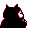

#143
Snorlax
Normal
Very lazy. Just eats and sleeps. As its rotund bulk builds, it becomes steadily more slothful
Base stats Total 430
HP160
Attack110
Defense65
Speed30
Special65
Details
- Species
- Sleeping
- Height
- 6'11"
- Weight
- 1014.0 lb
- Catch rate
- 25
- Base exp
- 154
- Growth
- Slow
Level-up moves
LevelMoveType
StartHeadbuttNormal
StartAmnesiaPsychic
StartRestPsychic
Lv 9TackleNormal
Lv 20HardenNormal
Lv 22BiteDark
Lv 24Dizzy PunchNormal
Lv 25StompNormal
Lv 26ScreechNormal
Lv 29CrunchDark
Lv 30Body SlamNormal
Lv 42Slack OffNormal
Lv 47Hyper BeamNormal
Evolution
Does not evolve.
Where to find
TM / HM
TM01 Mega PunchTM04 CrunchTM05 Mega KickTM06 ToxicTM07 Shadow BallTM08 Body SlamTM09 Take DownTM10 Double-EdgeTM11 BubblebeamTM12 Water GunTM13 Ice BeamTM14 BlizzardTM15 Hyper BeamTM17 SubmissionTM18 CounterTM19 Seismic TossTM20 Pay DayTM22 SolarbeamTM24 ThunderboltTM25 ThunderTM26 EarthquakeTM27 FissureTM28 DigTM29 PsychicTM31 MimicTM32 Double TeamTM33 ReflectTM34 BideTM35 MetronomeTM36 SelfdestructTM37 FlamethrowerTM38 Fire BlastTM44 RestTM46 PsywaveTM48 Rock SlideTM50 SubstituteHM03 SurfHM04 Strength